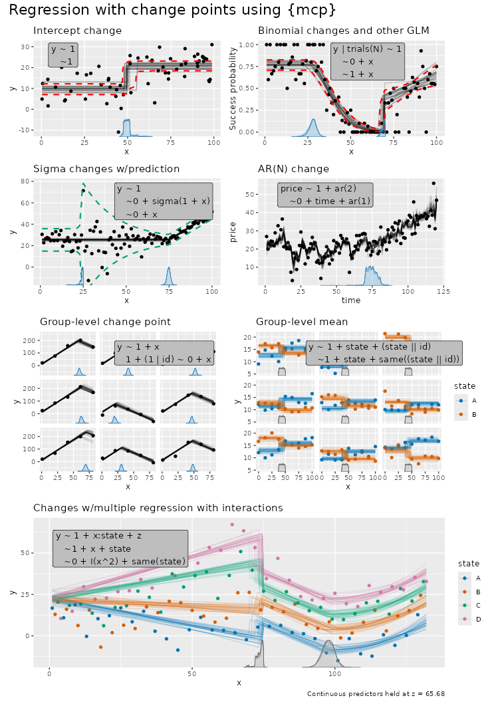
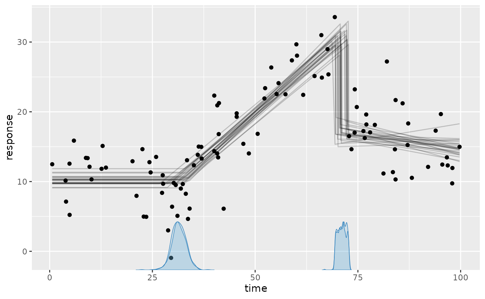
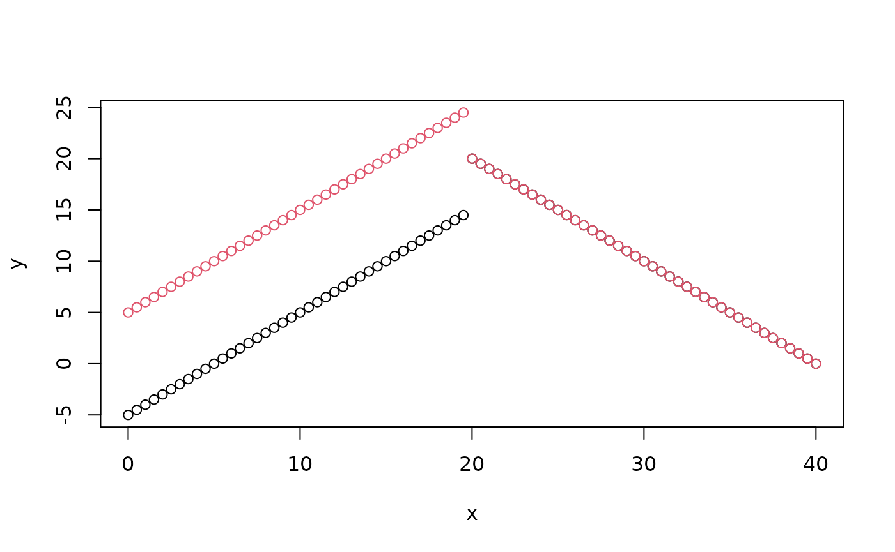

mcp takes a list of formulas, and defines the change
point as the point on the x-axis where the data shifts from being
generated by one formula to the next. So with N formulas,
you have N - 1 change points. A list with just one formula
thus corresponds to normal regression with 0 change points.
The formulas are called “segments” because they divide the (observed)
x-axis into N segments. Here are some examples:

Formula format for segments
The three formula parts are called response,
cp, and predictor. The general format
is response ~ cp ~ predictor, except for the first segment,
which has no change point and therefore uses
response ~ predictor. In later segments the response may be
omitted, and the change point defaults to 1, so
~ x is shorthand for y ~ 1 ~ 1 + x. The
predictor part works like in
lm()/glm()/brms::brm().
1. Response (segment 1 only):
-
y ~ ...: Standard continuous or count response (Gaussian, Poisson, Bernoulli). -
successes | trials(total) ~ ...: Binomial response (family = binomial()). -
y | weights(w) ~ ...: Observation log-likelihood weights (multiplies each observation’s log-likelihood contribution byw > 0; affects posterior inference andlog_lik(), but not predictions). -
y | trials(total) + weights(w) ~ ...: Combine response auxiliaries using+.
2. Change-point modeling (cp, segments
2+):
-
1 ~ ...(or omitted, e.g.,~ x): Population-level change point (default). -
1 + (1 | id) ~ ...: Group-level change-point deviations around the population change point (read more).
3. Regression formula (all segments):
-
~ 1 + x: Disjoined slope with a new segment intercept. -
~ 0 + x: Joined slope (no new intercept). -
~ 1: Plateau (intercept only, no slope). -
~ x:state + z + (1 | id): Other variables, interactions, and group-level effects (read more). -
+ sigma(1 + x)orshape(0 + state): Distributional parameters on the link scale (read more). -
+ ar(1)orma(2, 1 + x): Autoregressive and moving-average time-series residuals on the link scale; include them in every segment where they apply (read more).
mcp is heavily inspired by brms which again
is inspired by lme4::lmer()
which extends lm() and glm(). Here
is a bit of history on that.
How segments connect
Here is the demo model from the README,
which ships already fitted as demo_fit:
library(mcp)
model = list(
response ~ 1, # Plateau (Intercept_1)
~ 0 + time, # Joined slope (time_2)
~ 1 + time # Disjoined slope (Intercept_3, time_3)
)
plot(demo_fit)
Segment 2 continues from where the plateau left off, while segment 3
starts afresh with a new intercept. Three rules govern this (with
x as the change-point variable, i.e., time
above):
-
Only included terms get coefficients.
A segment includes the terms in its formula, plus an intercept unless removed with0 +. Each included term gets a new coefficient (x_2,stateB_2) or reuses an existing one withsame(). -
x-terms are measured from the change point.
x,x:z,state:x, andI(x^2)start at zero at the segment’s change point and stop growing at the next change point (they plateau). See the math below. -
Joined or disjoined.
Without an intercept (0 + ...), a segment is joined: it continues from where the earlier intercept and x-terms left off. With an intercept, it is disjoined and starts afresh.
The same rules apply separately to sigma(),
shape(), ar(), and ma().
sigma and shape are required by the
likelihood, so they include an intercept in segment 1. Per rule 3, they
are joined in later segments that do not include them.
Joining applies to the intercept and x-terms
Other terms, such as z, state, and
(1 | id), end at the change point unless included again. So
a joined segment can still start with a jump, as it does for the two
values of z below. We use fit$simulate() to
compute predictions for chosen parameter values:
model = list(
y ~ 1 + x + z, # Intercept_1, x_1, z_1
~ 0 + x # Joined x_2; z is not included
)
df = expand.grid(x = seq(0, 40, by = 0.5), z = c(-1, 1), y = 0)
fit = mcp(model, data = df, par_x = "x", sample = FALSE)
df$y = fit$simulate(fit, df, cp_1 = 20, Intercept_1 = 0, x_1 = 1, z_1 = 5, x_2 = -1, sigma_1 = 1, .type = "fitted")
plot(y ~ x, data = df, col = factor(z)) # Red: z = 1. Black: z = -1
To keep z in segment 2, include it again:
~ 0 + x + same(z) reuses z_1 whereas
~ 0 + x + z estimates a new z_2.
Conversely, a joined segment can depend on a variable it does not
include: in list(y ~ 1 + x:z, ~ 0), the slope in segment 1
differs by z, so the plateau in segment 2 does too.
Examples: Included terms and parameter names
New coefficients are named after their segment: x_1,
x_2, etc. Change points are cp_1,
cp_2, etc.; cp_1 separates segments 1 and 2.
In these examples, the change-point variable is x; set
mcp(..., par_x = "x") if mcp does not automatically select
the correct change-point variable.
# 1. Slopes: joined or disjoined
model = list(
y ~ 1 + x, # Intercept_1, x_1
~ 0 + x, # At cp_1: Joined slope (x_2)
~ 1 + x, # At cp_2: Disjoined slope (Intercept_3, x_3)
~ 0 # At cp_3: Joined plateau (no new coefficients)
)
# 2. Factors, other variables, and interactions
model = list(
y ~ 1 + x:state + z, # Intercept_1, by-state slopes (xstateA_1, ...), z_1
~ 1 + x + state, # At cp_1: Disjoined (Intercept_2, x_2, stateB_2, ...); z not included
~ 0 + x # At cp_2: Joined slope (x_3); state not included
)
# 3. Group-level effects in the predictor
model = list(
y ~ 1 + x + (1 | id), # Intercept_1, x_1, group intercept deviations
~ 0 + x + (1 | id), # At cp_1: Joined slope (x_2); new group deviations and SD
~ 0 + x # At cp_2: Joined slope (x_3); (1 | id) not included
)
# 4. Group-level change points: effects before the last tilde
model = list(
y ~ 1 + x, # Intercept_1, x_1
1 + (1 | id) ~ 0 + x, # At cp_1, varying by id (cp_1_id): Joined slope (x_2)
~ 1 # At cp_2: Disjoined plateau (Intercept_3)
)
# 5. Distributional parameters and AR/MA
model = list(
y ~ 1 + x + sigma(1 + x) + ar(1), # Intercept_1, x_1; log-SD slope (sigma_1, sigma_x_1); AR(1) (ar1_1)
~ 0 + x + ar(1, 1 + x), # At cp_1: Joined slope (x_2); sigma joined plateau; new AR(1) (ar1_2, ar1_x_2)
~ 0 + sigma(1), # At cp_2: Joined mu plateau; new sigma_3; AR not included
~ 0 + ma(2) # At cp_3: Joined mu plateau; sigma joined; MA(2) (ma1_4, ma2_4)
)Sharing coefficients between segments
To reuse a coefficient instead of estimating a new one, include
same(term). The coefficient keeps its source name:
model = list(
y ~ 1 + x + z + (1|id),
~ 0 + x + state + same(z), # Reuse z_1; other coefficients are new
~ 1 + same(x + z), # Reuse x_2 and z_1
~ 0 + same(x, as = 1) + same(state, as = 2), # Reuse x_1 and segment 2 factor coding/coefficients
~ 0 + same((1|id), as = 1), # Reuse segment 1 group deviations and SD
~ 1 + sigma(0 + x), # New log-SD slope sigma_x_6, joined to initial sigma_1
~ 0 + sigma(1 + same(x)) # New log-SD intercept sigma_7; reuse sigma_x_6
)same() refers to the preceding segment by default; use
as to pick an earlier segment. It works for factors
(same(state)), group effects (same((1 | id))
reuses deviations and SD), and inside distributional parameters
(sigma(0 + same(x))). Reused x-terms are still measured
from the current change point.
Reused coefficients are estimated jointly from all segments where they are included, not fitted in one segment and copied to another.
Inspect coefficients
mcp_pars()
lists the parameters that follow from the rules above. You can use it
before sampling:
model = list(
y ~ 1 + x:state + z, # Intercept_1, by-state slopes, z_1
~ 1 + x + state + same(z), # Intercept_2, x_2, state contrasts; reuse z_1
~ 0 + same(x) # Joined; reuse x_2
)
fit = mcp(model, data = mcp_example_data("multiple"), par_x = "x", sample = FALSE)
mcp_pars(fit)## # A tibble: 14 × 9
## name part scope role segment dpar order group_col population_name
## <chr> <chr> <chr> <chr> <int> <chr> <int> <chr> <chr>
## 1 cp_1 cp popu… chan… 2 cp NA NA NA
## 2 cp_2 cp popu… chan… 3 cp NA NA NA
## 3 Intercept_1 predic… popu… fixe… 1 mu NA NA NA
## 4 z_1 predic… popu… fixe… 1 mu NA NA NA
## 5 xstateA_1 predic… popu… fixe… 1 mu NA NA NA
## 6 xstateB_1 predic… popu… fixe… 1 mu NA NA NA
## 7 xstateC_1 predic… popu… fixe… 1 mu NA NA NA
## 8 xstateD_1 predic… popu… fixe… 1 mu NA NA NA
## 9 Intercept_2 predic… popu… fixe… 2 mu NA NA NA
## 10 x_2 predic… popu… fixe… 2 mu NA NA NA
## 11 stateB_2 predic… popu… fixe… 2 mu NA NA NA
## 12 stateC_2 predic… popu… fixe… 2 mu NA NA NA
## 13 stateD_2 predic… popu… fixe… 2 mu NA NA NA
## 14 sigma_1 predic… popu… dpar… 1 sigma NA NA NAThanks to same(), there is no z_2 or
x_3.
Some clarifications on formula behavior
Factors use ordinary R formula coding: with treatment coding,
1 + state gives contrasts to a reference level, while
0 + state gives coefficients for all levels. A predictor
group effect such as (1 | id) applies where it is included.
A change-point group effect applies only at the change point where it is
included; it does not introduce group effects in the predictor.
Only bare x, powers such as I(x^2), and
their interactions are x-terms. Other transformations, such as
sin(x) and poly(x, 2), use the original values
of x, as in lm(), and do not join:
list(
y ~ 1, # Intercept_1
~ 1 + sin(x) + x + I(x^2) # sin(x) uses x; x and I(x^2) are measured from cp_1
)Offsets have fixed coefficients: include
offset(log(exposure)) wherever it applies. Read more about
offsets in Poisson and Negative
Binomial models.
Multiple regression and categorical predictors
Here is the model from the overview plot at the top of this page, with an extra plateau segment:
# Define model with multiple predictors
model = list(
y ~ 1 + x:state + z, # Segment 1: by-state slopes on x, and z
~ 1 + x + state, # Segment 2: shared slope on x, by-state intercepts
~ 0 + I(x^2), # Segment 3: joined quadratic; state not included
~ 1 # Segment 4: shared intercept for all states
)
# Load data and inspect parameters without sampling
ex = mcp_example("multiple", sample = FALSE)
fit = mcp(model, data = ex$data, par_x = "x", sample = FALSE)
mcp_pars(fit)## # A tibble: 17 × 9
## name part scope role segment dpar order group_col population_name
## <chr> <chr> <chr> <chr> <int> <chr> <int> <chr> <chr>
## 1 cp_1 cp popu… chan… 2 cp NA NA NA
## 2 cp_2 cp popu… chan… 3 cp NA NA NA
## 3 cp_3 cp popu… chan… 4 cp NA NA NA
## 4 Intercept_1 predic… popu… fixe… 1 mu NA NA NA
## 5 z_1 predic… popu… fixe… 1 mu NA NA NA
## 6 xstateA_1 predic… popu… fixe… 1 mu NA NA NA
## 7 xstateB_1 predic… popu… fixe… 1 mu NA NA NA
## 8 xstateC_1 predic… popu… fixe… 1 mu NA NA NA
## 9 xstateD_1 predic… popu… fixe… 1 mu NA NA NA
## 10 Intercept_2 predic… popu… fixe… 2 mu NA NA NA
## 11 x_2 predic… popu… fixe… 2 mu NA NA NA
## 12 stateB_2 predic… popu… fixe… 2 mu NA NA NA
## 13 stateC_2 predic… popu… fixe… 2 mu NA NA NA
## 14 stateD_2 predic… popu… fixe… 2 mu NA NA NA
## 15 xE2_3 predic… popu… fixe… 3 mu NA NA NA
## 16 Intercept_4 predic… popu… fixe… 4 mu NA NA NA
## 17 sigma_1 predic… popu… dpar… 1 sigma NA NA NAKey features of multiple regression models in mcp:
-
Common change points across categories: The change
points
cp_1andcp_2are estimated as single locations shared across all levels ofstate. (If you instead want category-specific change-point locations that deviate per group, use group-level effects like1 + (1|group) ~ ...; see group-level effects). -
Parameter names across segments: In segment 1,
xstateA_1throughxstateD_1represent separate slopes for each level ofstate. In segment 2,stateB_2,stateC_2, andstateD_2represent intercept offsets relative to the reference levelstateA. A variable such aszmust be included in each segment where it applies. -
Plotting and prediction: Visualize by state using
plot(fit, color_by = "state")orplot(fit, facet_by = "state"). By default, other numeric variables (likez) are held at their mean automatically byinterpolate_newdata(), or can be set explicitly viaplot(fit, color_by = "state", at = list(z = 0)).
Relative changes between segments
Parameters in mcp represent the absolute values within
each segment (e.g., time_2 is the slope in segment 2 and
time_3 is the slope in segment 3). To evaluate the
relative change between segments, you can use
hypothesis() for quick estimates or use
as_draws_df() to work with the distribution.
First, using hypothesis():
hypothesis(demo_fit, "time_3 > time_2")## hypothesis mean lower upper prob BF
## 1 time_3 - time_2 > 0 -0.6323957 -0.8068299 -0.4923073 0 0The estimate reflects the difference time_3 - time_2
(how much steeper or flatter the slope became in segment 3), along with
its credibility interval, posterior probability, and directional Bayes
factor. Read more about hypothesis
testing in the comparison article. Here, the estimate is negative,
so the slope is smaller in segment 3 than in segment 2.
If you need the full posterior distribution of the change (e.g., for
quantile(), hist(), or plotting with
ggplot2), extract draws, e.g., using
as_draws_df():
draws = as_draws_df(demo_fit) |>
dplyr::mutate(diff_time = time_3 - time_2)
head(draws)## # A draws_df: 6 iterations, 1 chains, and 8 variables
## Intercept_1 Intercept_3 cp_1 cp_2 sigma_1 time_2 time_3 diff_time
## 1 10.2 16 31 72 4.5 0.51 0.077 -0.44
## 2 9.9 16 31 70 3.6 0.51 -0.047 -0.56
## 3 9.4 17 31 71 3.6 0.51 -0.078 -0.59
## 4 10.8 17 32 71 3.4 0.54 -0.075 -0.61
## 5 9.3 19 33 73 3.8 0.59 -0.178 -0.77
## 6 9.3 17 30 72 4.0 0.54 -0.113 -0.65
## # ... hidden reserved variables {'.chain', '.iteration', '.draw'}You can now use diff_time directly with base R functions
like quantile(draws$diff_time, c(0.025, 0.975)) and
hist(draws$diff_time).
Modeling intercept change points
A change point is simply like an ifelse statement or
multiplying with indicators (0s and 1s):
# Model parameters
x = 1:20
cp_1 = 12
Intercept_1 = 5
Intercept_2 = 10
# Ifelse version
y_ifelse = ifelse(x <= cp_1, yes = Intercept_1, no = Intercept_2)
# Indicator equivalent using dummy helpers
cp_0 = -Inf
cp_2 = Inf
y_indicator = (x > cp_0) * (x <= cp_1) * Intercept_1 + # Between cp_0 and cp_1
(x > cp_1) * (x <= cp_2) * Intercept_2 # Between cp_1 and cp_2
# Show it
par(mfrow = c(1,2))
plot(x, y_ifelse, main = "ifelse(x <= cp_1)")
plot(x, y_indicator, main = "(x > cp_1) * Intercept_2")The magic of (Bayesian) MCMC sampling is that it can actually infer
the change point from this simple formulation. We let mcp
write the JAGS code for this simple two-plateaus model and see how it
uses the indicator formulation of change points:
model = list(y ~ 1, ~ 1)
fit = mcp(model, data = data.frame(y = 1:10, x = 1:10), sample = FALSE, par_x = "x")
fit$jags_code## model {
## # mcp helper values
## cp_0 = CONST1_
## cp_2 = CONST2_
##
## # Priors for population-level effects
## cp_frac_1_ ~ dbeta(1, 1) # Relative fraction of remaining span (Uniform order statistics)
## cp_1 = cp_0 + cp_frac_1_ * (cp_2 - cp_0) # Ordered change point
## Intercept_1 ~ dnorm(5.5, 1/(7.569126)^2) # Mean intercept (rstanarm default)
## Intercept_2 ~ dnorm(5.5, 1/(7.569126)^2) # Mean intercept (rstanarm default)
## sigma_1 ~ dt(0, 1/(3.7)^2, 3) T(0.001,) # Positive residual SD calibrated on the response scale
##
## # Model and likelihood
## for (i_ in 1:length(x)) {
## # par_x local to each segment
## x_local_1_[i_] = min(x[i_], cp_1)
## x_local_2_[i_] = min(x[i_], cp_2) - cp_1
##
## # Formula for mu
## link_mu_[i_] =
## (x[i_] >= cp_0) * (x[i_] < cp_1) * inprod(rhs_matrix_[i_, c(1)], c(Intercept_1)) * 1 +
## (x[i_] >= cp_1) * inprod(rhs_matrix_[i_, c(2)], c(Intercept_2)) * 1
##
## # Formula for sigma
## link_sigma_[i_] =
## (x[i_] >= cp_0) * inprod(rhs_matrix_[i_, c(3)], c(sigma_1)) * 1
##
## # Likelihood and log-density for family = gaussian()
## mu_[i_] = link_mu_[i_]
## sigma_[i_] = max(1e-03, link_sigma_[i_])
## y[i_] ~ dnorm(mu_[i_], 1 / sigma_[i_]^2)
## }
## }Look at the section under the comment # Formula for mu
which is the (automatically generated) model that was discussed above.
Some unnecessary stuff is added to segment 1 just because it makes the
code easier to generate. (x[i_] >= cp_0 when
cp_0 is the smallest value of x is, of course,
always true).
Modeling slope change points
Mathematically, an mcp model divides the change-point
variable x into K segments separated by ordered change points
\tau_1 < \dots < \tau_{K-1}. In
each segment k \in \{1, \dots, K\}, the
linear predictor \eta_i on the link
scale measures x from the change point
\tau_{k-1}:
\eta_i = \alpha_k + \beta_{k,1} \, (x_i - \tau_{k-1}) \quad (\text{with } \tau_0 = 0)
where \alpha_k is the value at the start of segment k:
\alpha_k = \begin{cases} \beta_{k,0}, & \text{disjoined } (\sim \texttt{1 + x}, \text{ or } k = 1) \\ \alpha_{k-1} + \beta_{k-1,1} (\tau_{k-1} - \tau_{k-2}), & \text{joined } (\sim \texttt{0 + x}) \end{cases}
That is, a disjoined segment starts at its own intercept \beta_{k,0}, while a joined segment continues from where segment k-1 left off.
Here, \beta_{k,1} is the slope on
x in segment k. Intercepts and slopes are absolute values
(not changes relative to preceding segments). Other variables (e.g.,
+ z + state) add \sum_j
\gamma_{k,j} z_{j,i} in the segments where they are included.
They use their original values and are not part of \alpha_k, which is why they can make a joined
segment start with a jump.
How mcp implements this in JAGS using indicators
Bayesian MCMC samplers like JAGS cannot evaluate dynamic conditional
statements (if/else) on parameters being sampled. To
implement this piecewise model in JAGS, mcp uses an
indicator and plateauing formulation (evaluated via
Iverson brackets [A] which equal 1 when
true and 0 when false).
First, mcp defines a span X_{k,i} that measures x from the change point within segment k and stays constant beyond it:
X_{1,i} = \min(x_i, \tau_1) X_{k,i} = \max\bigl(0, \min(x_i, \tau_k) - \tau_{k-1}\bigr) \quad (k \ge 2)
When x_i < \tau_{k-1}, X_{k,i} = 0 (before the segment). When \tau_{k-1} \le x_i < \tau_k, X_{k,i} = x_i - \tau_{k-1} (linear growth within the segment). When x_i \ge \tau_k, X_{k,i} = \tau_k - \tau_{k-1} (constant segment width).
For a purely joined model
(list(y ~ 0 + x, ~ 0 + x)), mcp writes \eta_i as a cumulative sum of these segment
spans:
\eta_i = \sum_{k=1}^K [x_i \ge \tau_{k-1}] \cdot \beta_{k,1} X_{k,i}
Because each segment’s contribution stays constant beyond its change point (\beta_{k-1,1}(\tau_{k-1} - \tau_{k-2})), joining needs no parameter constraints: earlier segments provide the starting value for later segments. The expected response on the response scale is \mu_i = g^{-1}(\eta_i) via link function g(\mu_i) = \eta_i (identity for Gaussian, so \mu_i = \eta_i).
When a segment is disjoined (~ 1 + x),
it introduces a new intercept \beta_{k,0} at \tau_{k-1}, and all earlier terms get the
indicator [x_i < \tau_{k-1}] so they
end where the disjoined segment starts. Terms that are not x-terms get
the same indicator at the next change point, which is why they end
there.
Let’s demonstrate this equivalence in R:
# Model parameters
x = 1:20
cp_1 = 12
slope_1 = 2
slope_2 = -1
# Ifelse version
y_ifelse = ifelse(x <= cp_1,
yes = slope_1 * x,
no = cp_1 * slope_1 + slope_2 * (x - cp_1))
# Indicator version with local plateauing coordinates (pmin is vectorized min)
y_local = slope_1 * pmin(x, cp_1) +
(x > cp_1) * slope_2 * (x - cp_1)
# Show that both formulations are identical
par(mfrow = c(1,2))
plot(x, y_ifelse, main = "ifelse() version")
plot(x, y_local, main = "Local plateauing coordinate")Let us see this in action:
model = list(y ~ 0 + x, ~ 0 + x)
fit = mcp(model, data = data.frame(y = 1:10, x = 1:10), sample = FALSE)
fit$jags_code## model {
## # mcp helper values
## cp_0 = CONST1_
## cp_2 = CONST2_
##
## # Priors for population-level effects
## cp_frac_1_ ~ dbeta(1, 1) # Relative fraction of remaining span (Uniform order statistics)
## cp_1 = cp_0 + cp_frac_1_ * (cp_2 - cp_0) # Ordered change point
## x_1_rise_ ~ dnorm(0, 1/(2.5*(cp_1-cp_0))^2) # Autoscaled mean coefficient (rstanarm default); sampled as the rise over the segment
## x_1 = x_1_rise_ / (cp_1 - cp_0)
## x_2_rise_ ~ dnorm(0, 1/(2.5*(cp_2-cp_1))^2) # Autoscaled mean coefficient (rstanarm default); sampled as the rise over the segment
## x_2 = x_2_rise_ / (cp_2 - cp_1)
## sigma_1 ~ dt(0, 1/(3.7)^2, 3) T(0.001,) # Positive residual SD calibrated on the response scale
##
## # Model and likelihood
## for (i_ in 1:length(x)) {
## # par_x local to each segment
## x_local_1_[i_] = min(x[i_], cp_1)
## x_local_2_[i_] = min(x[i_], cp_2) - cp_1
##
## # Formula for mu
## link_mu_[i_] =
## (x[i_] >= cp_0) * inprod(rhs_matrix_[i_, c(1)], c(x_1)) * x_local_1_[i_] +
## (x[i_] >= cp_1) * inprod(rhs_matrix_[i_, c(2)], c(x_2)) * x_local_2_[i_]
##
## # Formula for sigma
## link_sigma_[i_] =
## (x[i_] >= cp_0) * inprod(rhs_matrix_[i_, c(3)], c(sigma_1)) * 1
##
## # Likelihood and log-density for family = gaussian()
## mu_[i_] = link_mu_[i_]
## sigma_[i_] = max(1e-03, link_sigma_[i_])
## y[i_] ~ dnorm(mu_[i_], 1 / sigma_[i_]^2)
## }
## }Look at the JAGS code under
# par_x local to each segment and
# Formula for mu to see this exact indicator formulation in
action: x_local_1_[i_] and x_local_2_[i_]
correspond to X_{1,i} and X_{2,i}, and each segment’s slope is
multiplied by its activation indicator (e.g.,
(x[i_] >= cp_1)).
You will find the exact same formula for y_ = ... if you
do print(fit$simulate), though this function contains a
whole lot of other stuff too.
Implementation: Improve sampling efficiency by keeping segment ends in place when change points move
In fit$jags_code, you may see unintuitive formulations
like the following:
# Joined segments: slope sampled as the rise over the segment
x_2_rise_ ~ dnorm(0, 1/(0.2*(cp_2-cp_1))^2)
x_2 = x_2_rise_ / (cp_2 - cp_1)
# Disjoined segments: intercept sampled as the level at the segment end
Intercept_3_end_ ~ dnorm(0.6 + x_3 * (cp_3 - cp_2), 1/(3.5)^2)
Intercept_3 = Intercept_3_end_ - (x_3 * (cp_3 - cp_2))Like most Gibbs samplers, JAGS updates one parameter at a time while holding the others fixed. If it holds a slope \beta_{k,1} fixed while it updates a change point \tau_k, the level at the end of segment k moves by \beta_{k,1} \Delta\tau, and so do all later joined segments. Such moves fit the data badly and are mostly rejected, so the change point and the slope must creep along together, which mixes slowly.
mcp solves this by reparameterizing the model, sampling
the above quantities whenever a prior is an mcp-default normal prior.
With this, moving a change point leaves the levels at the ends of each
segment in place.
This is a reparameterization, not a new model: the priors, and hence
the posteriors, are exactly those of the naive formulation. If the
default prior is \beta_{k,1} \sim
\text{Normal}(0, s), the rise r_k =
\beta_{k,1} w_k over the segment width w_k = \tau_k - \tau_{k-1} has standard
deviation s w_k. So mcp
gives the rise the prior r_k \sim
\text{Normal}(0, s w_k), which keeps the implied slope r_k / w_k at \text{Normal}(0, s). Likewise, the level at
the segment end, e_k = \beta_{k,0} +
\beta_{k,1} w_k \sim \text{Normal}(m + \beta_{k,1} w_k, s), is
just the intercept’s default \text{Normal}(m,
s) prior shifted by \beta_{k,1}
w_k. We can verify this for widths spanning two orders of
magnitude:
s = 0.5 # Prior SD of the slope
width = runif(100000, 0.5, 50) # Any segment widths
rise = rnorm(100000, mean = 0, sd = s * width) # Prior on the rise
slope = rise / width # Derived slope
c(mean = mean(slope), sd = sd(slope)) # Normal(0, 0.5), as for the naive slope## mean sd
## -0.002053742 0.499749822User-specified priors are sampled as written.